What the model does
Abiotic stress (heat, soil salinity, and vapor pressure deficit) reduces crop yields across Taiwan's farmland long before visible damage appears, by disrupting plant hormone balance and protein stability at the cellular level. ReLeaf addresses this by deploying an optogenetically controlled B. subtilis bioreactor that senses field stress in real time and produces tailored protectant proteins delivered directly through the irrigation system. Our mathematical model asks the question that connects every part of that system: given today's stress conditions in a Taiwanese farm field, how much engineered protectant actually reaches the plant's root zone, and what does deploying that system across Taiwan's 346 farming townships actually cost?
The model serves three purposes.
Control. It converts a real-time environmental stress reading into a precise green-light dose for the bioreactor LED, using the measured CcaSR optogenetic transfer function to close the loop between field conditions and gene expression.
Delivery prediction. It quantifies how much of what the bioreactor produces survives the full transport chain (membrane crossing, irrigation dilution, soil adsorption, and root uptake) under realistic field conditions.
Scale-up. Using 2.79 million real farmland parcels, live road-network routing, and three wet-lab titer scenarios, it computes how many bioreactors Taiwan needs, where they should be placed, and what centralized versus decentralized deployment costs.
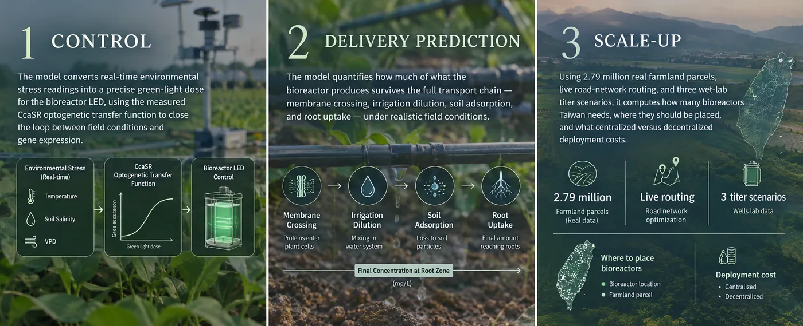
Model structure
ReLeaf's model follows the protectant from the moment stress is measured in a field, through light-driven production in an engineered bioreactor, into a bottle, onto a leaf surface where it intercepts ACC before ethylene is produced, and finally out to the scale of Taiwan's farmland.
We built it to answer three questions the wet lab cannot answer on its own:
- How much protectant does a field actually need, and at what point in the season?
- Can the bioreactor produce that much, fast enough to matter?
- What would it take to run this across Taiwan?
The model has two tiers. Four models form one physical chain, each passing a defined quantity to the next, so that the output of one is literally the input of the next. A fifth takes the output of that chain and asks a different question at a different scale: not how the protectant moves, but how many reactors are needed and where they go.
| Model | Question | Takes | Gives |
|---|---|---|---|
| 1. Stress sensing and light control | How much stress is the field under, and what light signal should the bioreactor receive? | T, EC, VPD | Composite Stress Index, required PPFD |
| 2. Genetic circuit and production | How much active enzyme can we make, and how quickly? | PPFD | Enzyme activity over time (mU/mL), response delay |
| 3. Field delivery and dose estimation | How much does the crop need, and how much arrives on the leaf? | Activity, CSI, growth stage, field area | Spray volume, batch volume, delivered dose per leaf area |
| 4. Soil transport and root uptake | For a root-zone protectant, how much reaches the root? | Applied concentration | Root-zone concentration, effective coverage area |
Models 1 to 3 run in sequence for AccD, which acts on the leaf surface. Model 4 is a branch, not a fourth step: it replaces Model 3 for any protectant confirmed to act at the root zone, such as LEA14 or BoPep4. Which branch a protectant takes is set by its site of action, which the wet lab determines.
Each model below follows the same order: background, assumptions, results, method. Results come before derivations, because the question a reader arrives with is what the model concluded, not how it was integrated. All assumptions are collected in one place rather than distributed through the models, so that the scope of the whole framework can be judged without reading every derivation, and each model's own section repeats only the assumptions that bear on it. Equations are numbered continuously across all five models and referenced by number. Units are stated at first use and collected in the symbol table in section 10.
The whole pipeline, as the drafts draw it Eleven sub-models with their status, and the four-stage figure that condenses them. Open this for the map before reading the sections.
Abiotic stress (heat, soil salinity, and shifts in vapor pressure deficit) quietly reduces crop yield long before visible damage appears, by disrupting plant hormone balance and protein stability at the cellular level. ReLeaf's mathematical model traces what it takes to counter that damage: starting from a real-time field reading, it follows a chain of physical handoffs through a bacterial bioreactor, an irrigation line, and a column of soil, until the engineered protectant arrives at the root surface. That chain crosses four physically distinct domains (environmental sensing, optogenetics and cell biology, fluid transport, and soil physics) so the model is built as eleven linked sub-models rather than a single equation. Each sub-model is responsible for one handoff, and together they ask a question that is deceptively simple: given today's stress, how much protectant actually reaches the plant? A GIS layer then scales that question from a single field to all 346 farming townships across Taiwan, linking bioreactor deployment density and logistics cost to the same biological parameters.
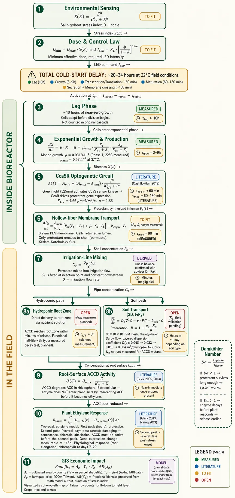
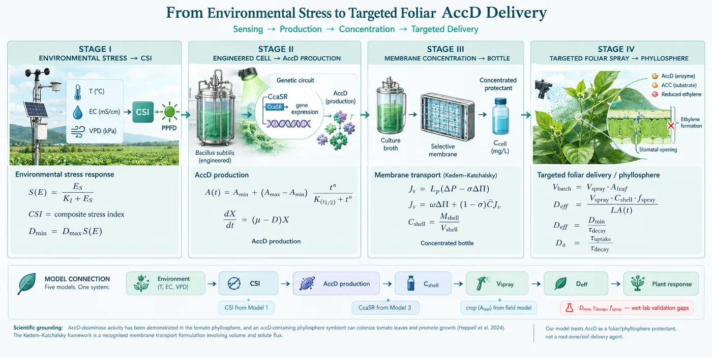
The two drafts disagree on one point. The overview still describes the protectant as delivered through the irrigation system, while the delivery model in section 6 replaces irrigation with a bottled foliar spray and gives the reason. The foliar route is the current design, and the overview sentence is out of date.
Stress index
Letting the harvest decide
Our bioreactor makes a crop protectant only when its green lamp is on. So the whole system depends on one number: how stressed is the crop right now? If that number is wrong, the lamp runs when the crop is fine, or stays off while the harvest is being lost. Most crop stress indices add temperature, water and light with weights chosen by experts, and are rarely checked against what happened in the field. We took a different route: let Taiwan's own harvests decide. The Agriculture and Food Agency (農粮署) has published county rice yields for every season since 2001. A season whose yield fell below its trend was a stressed season. If weather alone can predict which seasons fall, and by how much, that prediction is a stress index, and every harvest becomes a test of it.

The plan, in the modelling team's own words What the yield fit is meant to do, the data it needs, the held-out year, and the variables still under discussion.
- Train a stress index model that can turn heat and salinity and cross compare with the amount plant and the amount yield per year. From this we should be able to get a model that connects them.
- Data: detail data and parameter for the farm land around Taiwan; amount planted and amount yield.
- Deliberately leave one year and treat it as a test of our model.
- Variables: global warming? Typhoon (probably not). What else?
- Google weather lab?
The composite stress index
Taiwan's summers regularly push temperatures past 35 °C, and coastal farmland increasingly faces salinity intrusion from sea-level rise and irrigation overuse. We needed a single number that could tell the bioreactor how stressed the crop currently is, something the system could act on immediately. The Composite Stress Index does that. It takes three field measurements (temperature, soil salinity, and vapor pressure deficit) and outputs one value between 0 and 1. Everything downstream, how bright the LED shines, how much protectant gets produced, how much eventually reaches the root, follows from this number.
Input
- Temperature (°C), air temperature, sourced from Taiwan's Central Weather Administration (中央氣象署, CWA) through the Open-Meteo ECMWF forecast [1]. We pull the daily maximum and minimum temperature at 2 m height for D+1 through D+3 across 19 county-level anchor points covering all of Taiwan. To estimate the temperature at any specific field location, we interpolate across those 19 anchors using inverse-distance weighting (power = 4), then correct for elevation using a 6.5 °C/km lapse rate applied to both the anchor station and the target field.
- Electrical Conductivity (dS/m), soil electrical conductivity, used as our salinity stress proxy. Where a physical soil sensor is deployed at the field, we use that reading. Where one isn't available, EC is estimated from a spatial model combining coastal distance, terrain elevation, and a water-deficit term from the CWA forecast. This is the weakest input in the model and the one we most want to replace with real sensor readings.
- Vapor Pressure Deficit (kPa), calculated from the forecast temperature and the FAO reference evapotranspiration (ET0) values in the CWA forecast output [2]. VPD is not independently measured by a sensor in the current setup.
Output
The Composite Stress Index, \( CSI \in [0,\, 1] \). Across all 990 temperature, salinity and humidity combinations we tested within Taiwan's realistic agricultural range, the maximum we observed was 0.77. The index never saturated, which is intentional.
Method
Each input becomes a sub-score between 0 and 1 through a Hill function on the amount by which it exceeds a crop-specific threshold. Below the threshold the sub-score is zero, which is what keeps the reactor off on an ordinary day.
Results
To test the model across Taiwan's agricultural conditions, we ran CSI calculations across all realistic combinations of temperature (10 to 42 °C), salinity (six EC levels from fresh to highly saline), and vapor pressure deficit (five VPD levels). That gave us 990 scenarios total.
Most scenarios landed in the low-to-mild stress range. 85% of all combinations fell below CSI 0.4, which makes sense given that Taiwan's farmland is not constantly under extreme simultaneous stress. Only 55 combinations (5.5%) reached the High band. None exceeded CSI 0.8 anywhere in the tested range. The highest value we saw was 0.77, under the most extreme conditions we modeled: 42 °C, EC = 8.5 dS/m, VPD = 2.8 kPa.
We also checked whether the heat-salt synergy term is actually doing anything. At T = 40 °C and EC = 8.5 dS/m, adding temperature and salinity stress independently gives a CSI of 0.63. With the synergy term included, it comes out at 0.74. That 0.11 difference is entirely from the interaction term, and it lines up with what the published literature reports: when heat and salt stress occur together, the combined damage is greater than you'd predict by adding the two effects separately.
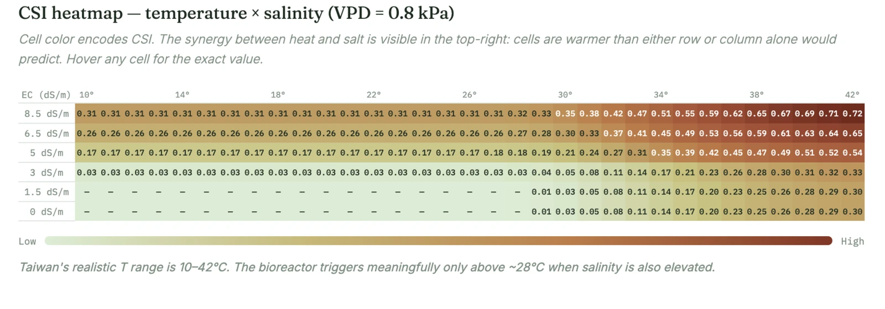
Application: the Taiwan stress map
Since the bioreactor needs time to produce protectant after activation, the system can't wait for stress to arrive, it needs to act ahead of it. This sub-model takes the CSI equations and runs them across all 346 farming townships in Taiwan simultaneously, using three-day CWA weather forecasts to flag which locations need bioreactor activation before the stress event hits.
Taiwan's terrain drops from mountain ranges above 3,000 m to sea-level coastal plains within a few kilometers, so raw weather station readings need spatial interpolation and elevation correction before they mean anything at the field level. That's the other job this sub-model does.
Inputs
- CWA forecast data via Open-Meteo ECMWF, retrieved every six hours for 19 county-level anchor points across Taiwan: Taipei, New Taipei, Keelung, Taoyuan, Hsinchu County, Hsinchu City, Miaoli, Taichung, Changhua, Nantou, Yunlin, Chiayi County, Chiayi City, Tainan, Kaohsiung, Pingtung, Yilan, Hualien, Taitung. We pull daily maximum and minimum temperature at 2 m height, total daily precipitation, and FAO reference evapotranspiration for D+1 through D+3.
- Elevation raster, terrain altitude in metres for every grid cell across Taiwan, used to correct anchor-point temperatures down to field-level.
- Coastal distance raster, straight-line distance from coastline per grid cell, used in the salinity vulnerability estimate when no physical EC sensor is available.
- Farmer inputs, two fields the farmer enters directly: their farmland location (county, township, or GPS coordinate) and their crop type, selected from eight profiles (rice, tea, banana, mango, pineapple, bamboo, maize, leafy vegetables). Each crop carries its own literature-cited heat onset and severe thresholds, cold onset temperature, and salt ECe tolerance, so the stress score returned is specific to what that farmer is actually growing, not a generic agricultural average.
Output and result
Once a farmer enters their location and crop type, the map returns a personalized D+1 through D+3 stress trajectory for their township, with temperature, salinity, and VPD contributions shown separately. The Taiwan choropleth updates at the same time, so they can see how their field compares to surrounding areas.
A few patterns come through consistently across all 346 townships. Southern Taiwan scores highest in summer, driven by heat and coastal salinity together. West Coast plains (Changhua, Yunlin, Chiayi) carry the highest salinity vulnerability year-round. Mountain counties stay low even in summer because the elevation correction significantly reduces their effective temperature.
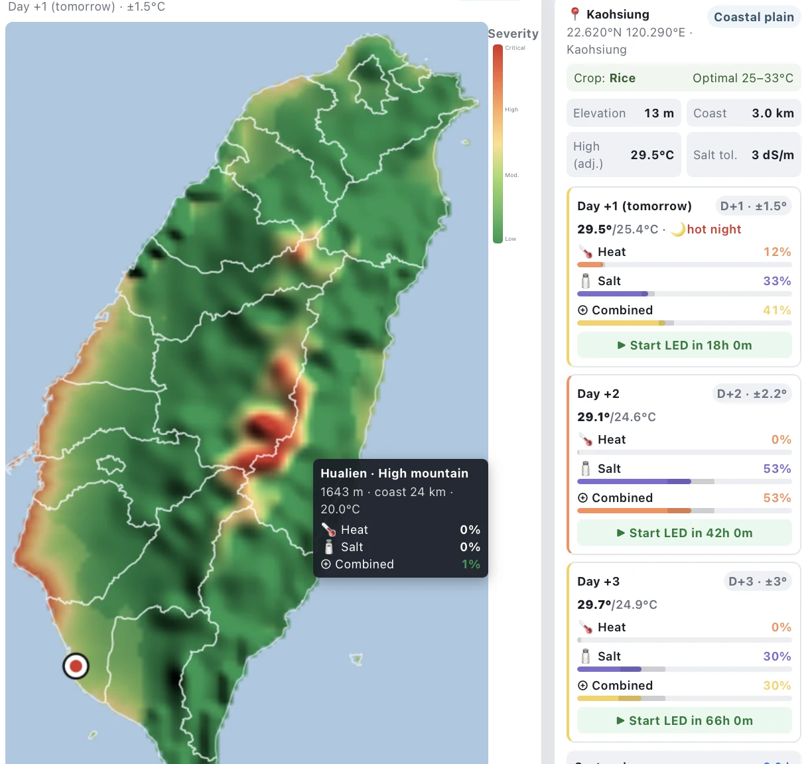
The climate layers this runs over, and the parcel and township geometry underneath them, are documented on Geospatial Analysis, which also states the limits of that data. Those limits apply here too.
The salt ladder behind the salinity arm
The salinity arm is the only part of the index with a dose response of our own behind it. On 3 August we measured root length in Arabidopsis thaliana on agar at four salt levels, six days after transfer, nine seedlings in every group. The means are 74.95, 34.77, 11.00 and 1.36 mm at 0, 75, 100 and 150 mM NaCl, with standard deviations of 2.77, 4.41, 4.07 and 1.09.
Fitting a Hill decline to those four means gives a curve with a half-effect at 73.1 mM and a slope of 5.61. The small residual means little, since two free parameters against four points guarantee one. The slope is the useful result: it comes out nearly the same whichever pair of points you take it from, 5.62 from the 75 and 100 mM pair, 5.49 from 100 and 150, 5.54 from 75 and 150.
build/model_figures.py, not in either draft.
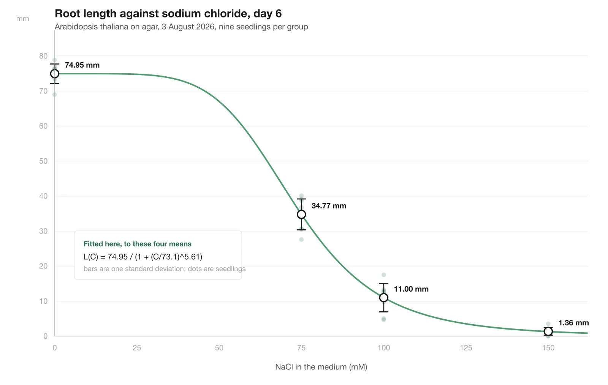
build/model_figures.py.A slope near 5.6 is steep. It makes the salinity arm close to a switch. Below about 60 mM the plant barely registers the salt, and by 100 mM it has lost seven eighths of its root. Two things still stand between this curve and a calibrated KS: the ladder is molarity in agar while the index takes conductivity in the field, and root elongation in a ten-day-old Arabidopsis seedling is not obviously the right endpoint for rice at heading. Until both are settled, the fit describes the assay and does not set a constant.
Stress index to light intensity
Once the composite stress index is known, the bioreactor needs a concrete instruction: how bright should the green LED shine? This sub-model answers that by inverting the measured CcaSR optogenetic transfer function, working backwards from the stress level to the light dose that will drive the right amount of gene expression, and therefore the right amount of protectant production.
The conversion happens in two steps. First, CSI is mapped to a required photon flux density (PPFD) by inverting the CcaSR Hill curve. Then PPFD is converted to illuminance in lux, the unit most LED hardware datasheets actually report, so the output can be used directly for hardware specification without an additional manual conversion.
Input: \( CSI \in [0,\, 1] \) from the stress index.
Output:
- PPFD (µmol photons m−2 s−1), the required green-light intensity at the bioreactor surface, clipped to the hardware range 0.5 to 20.
- Illuminance in lux, the hardware-facing equivalent of the PPFD value, derived from the photon energy of 526 nm green light and the human eye's sensitivity at that wavelength.
Assumption
The CcaSR Hill curve parameters, K = 4.66 µmol m−2 s−1 and n = 1.88, were measured by Ohlendorf et al. 2019 [3] using chemically inducible promoters to control CcaS and CcaR expression levels. Our construct uses constitutive promoters instead, which fixes CcaS and CcaR at different expression levels than the original system. If that shift changes the effective K or n of the full circuit, the light dose our model prescribes will produce a different expression level than intended. Re-characterising K and n after the final construct is built should be a priority before any field deployment.
Method
Step 1, invert the CcaSR transfer function. The CcaSR system's gene expression output follows a Hill-type response with light intensity I. Treating CSI as a normalised proxy for the target fractional activation, the required light intensity is:
Step 2, convert PPFD to lux. The constant 124 is derived from the photon energy at 526 nm (0.228 J per µmol of photons) multiplied by the luminous efficacy of 526 nm light (683 lm/W × V(526 nm) ≈ 0.80 = 546 lm/W). Because both lux and PPFD are already per-unit-area quantities, no area term is needed.
Combined, CSI directly to lux:
Result
- The system never saturates under Taiwan's realistic conditions. Across all 990 scenarios in the lookup table, the maximum CSI observed is 0.77, which maps to PPFD ≈ 8.8 µmol m−2 s−1 (1,091 lux), well below the hardware ceiling of 20. The model retains full dynamic range under the worst field conditions we tested.
- The half-activation point K = 4.66 sits in the moderate stress band. At CSI = 0.5, PPFD equals exactly K, the point at which the CcaSR circuit reaches 50% of its maximum activation. This means the system is most sensitive to stress changes precisely in the moderate range (CSI 0.4 to 0.6), where small changes in environmental conditions produce the largest changes in light dose.
- Low stress maps to the hardware floor. At CSI below about 0.15, PPFD clips to the 0.5 minimum. This is intentional: the CcaSR circuit has measurable leak expression at zero light, and the floor prevents confusion between intentional low-dose signals and background noise.
- The full 990-row lookup table covers all combinations of T (10 to 42 °C), EC (six levels), and VPD (five levels), with the corresponding CSI, PPFD, and lux for each.
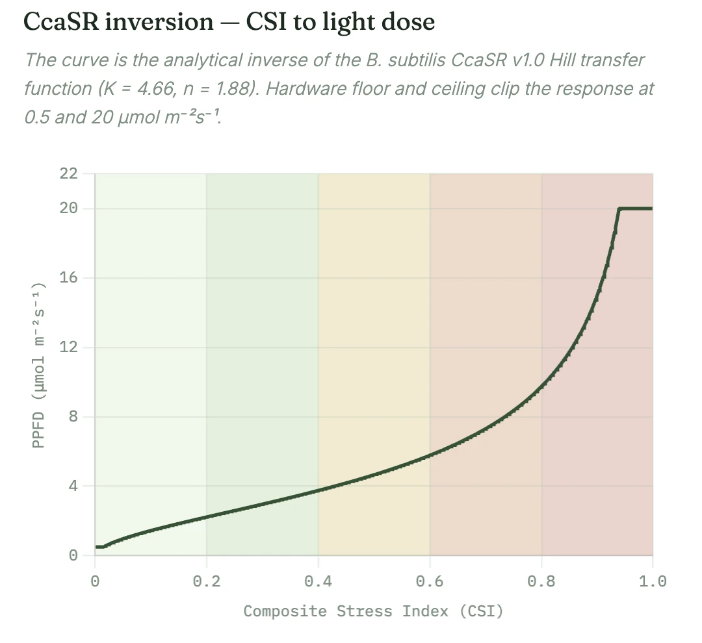
Gene circuit and protectant production
The light dose has to become protein. The draft models PcpcG2 output as a Hill curve anchored at an off state and an on state, with the shape taken from the CcaS sensor upstream of it.
The curve saturates the same way the light-sensing system itself does: steep response in the low-to-mid PPFD range, flattening out as it approaches the reactor's practical ceiling (20 µmol m−2 s−1), never quite reaching the full 30,000 MEFL ceiling within that hardware range.
Only two points on this curve are actually measured: the OFF state (1,500 MEFL) and the ON state (30,000 MEFL) for PcpcG2-veg, both wet-lab endpoints. Everything between them, the S-shaped rise plotted above, is not itself measured; it's assumed to follow the same Hill shape (K = 4.66, n = 1.88) as the upstream CcaS light sensor, because that's the only characterized transfer function we have for this circuit. In other words, the curve's endpoints are real data, but its shape is borrowed, not observed. A single intermediate-light wet lab measurement, even one PPFD value between 0.5 and 20 µmol m−2 s−1, would let us test whether PcpcG2-veg actually saturates like CcaS does, or whether the promoter response is steeper, shallower, or shifted relative to what's plotted here. Until that measurement exists, this graph should be read as the model's best prediction of promoter behavior, not a validated dose-response curve.
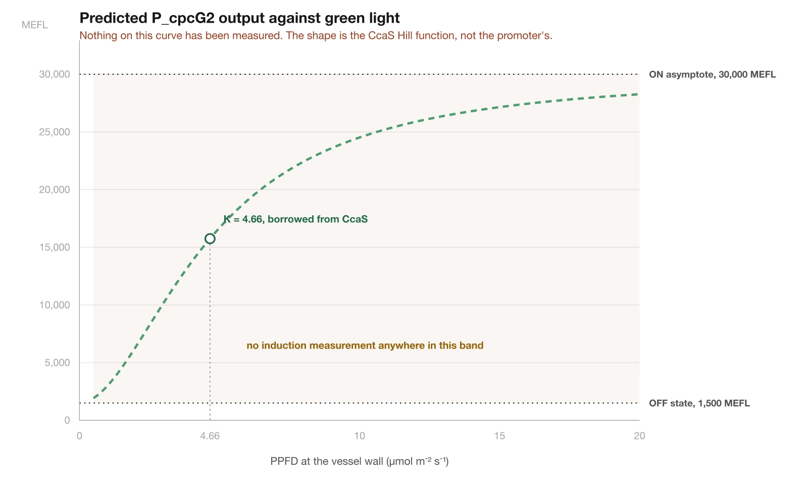
build/model_figures.py.B. subtilis growth in the vessel
Before the CcaSR circuit can produce any protectant, the B. subtilis culture needs to grow. This sub-model describes how the bacterial population builds up inside the bioreactor lumen over time, and how that biomass trajectory determines how much protectant the circuit can actually produce at any given moment. A culture that hasn't grown doesn't produce anything, regardless of how much green light is delivered.
Input: initial biomass X0 (OD600), concentrations of two limiting nutrients S1 and S2 (g/L), time t (h), temperature T (°C).
Output: biomass trajectory X(t) expressed as OD600, and corresponding nutrient depletion curves S1(t) and S2(t) over the full operational window.
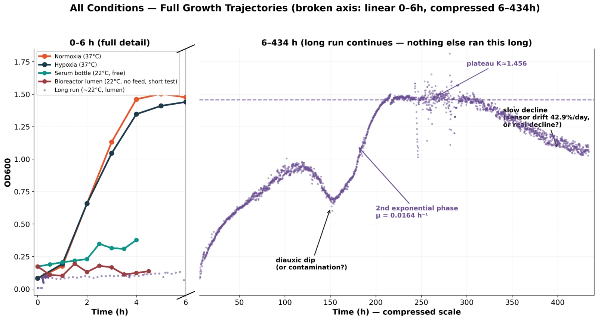
Result
- Temperature dominates growth rate. At 37 °C the culture reaches OD600 about 1.5 in under 4 hours. At 22 °C, the actual field operating temperature, the same plateau takes over 250 hours in the long run. The 37 °C curves are reference points, not operational predictions.
- The bioreactor lumen condition is the slowest and most relevant. The dark red curve (bioreactor lumen, 22 °C, no feed, short test) stays flat near 0.1 OD600 throughout the short test window. Without active nutrient feeding, the lumen culture produces very little biomass in the initial hours, thus little protectant, regardless of the light dose.
- Two distinct exponential phases are observed in the long-run data. The first phase gives μ1 = 0.0318 h−1 and the second gives μ2 = 0.0164 h−1, with a dip at about 150 h separating them. This is consistent with diauxic growth on two sequential carbon sources, which is what the double-Monod model captures, but contamination cannot yet be ruled out.
- The plateau K ≈ 1.456 OD600 is the carrying capacity target, reached at about 250 h under the long-run condition. The subsequent slow decline (42.9%/day sensor drift noted on the graph) is unresolved, it may be real culture decline or instrument artifact, and needs to be clarified before this value can be used as a calibrated operational parameter.
- Pre-culturing matters more than light dose in the early hours. Since protectant synthesis scales with X(t), a cold-start bioreactor at 22 °C will produce near-zero protectant during lag phase regardless of CSI.
The plateau is read at about 250 h, and the Digital Twin page reports the same run with its optical density flagged as unusable from 243.0 h. Those two statements cannot both stand as written; see the open questions in section 12.
Accumulation and delivery
The bioreactor produces protectant and the membrane concentrates it into a bottle. The question this model answers is how much goes into that bottle, and whether what the farmer sprays onto the crop is actually enough.
The original design routed protectant through the irrigation system. We changed this. Irrigation sprays indiscriminately across the field, including soil between rows where no plant exists, wasting enzyme and reducing the effective dose per unit leaf area. A bottled foliar spray lets the farmer target the canopy directly. The tradeoff is that the farmer now carries a calculation: how much to apply, when, and to how much crop area. This model provides that calculation.
AccD specifically targets the phyllosphere, the leaf surface, not the root zone. Under abiotic stress, ACC accumulates in leaf epidermal tissue, and it is there that AccD must intercept it before ethylene is produced. Phyllosphere bacteria producing AccD have been shown to colonize the tomato leaf surface and promote growth through ACC deaminase activity [4], and free AccD applied as a foliar spray to corn has been confirmed effective at 53 mU/mL per plant [5].
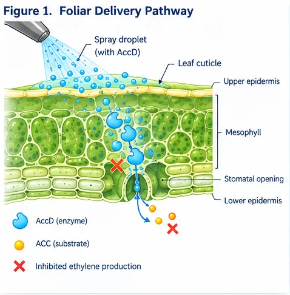
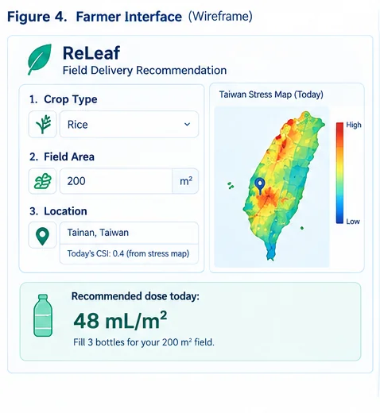
Inputs and outputs
From other models: Cshell (mg/L), the protectant concentration leaving the membrane; CSI, the current stress index; and the growth week t, 0 to 16. From the farmer: crop type, which selects the leaf area index curve and sensitivity profile, and field area Afield (m²).
Outputs: Vspray (mL/m²), the recommended spray volume per application; Vbatch (L), the total bioreactor production volume for this cycle; Deff (mg AccD per m² leaf area), the effective dose reaching the canopy; and an adequacy flag, which asks whether Deff is above the minimum effective dose.
Key assumption
Spray coverage efficiency fspray is treated as a fixed constant (0.55 to 0.70) rather than a dynamic variable. In reality it varies with wind speed, droplet size, canopy architecture, and spray technique. Experimental spray deposition research shows that average foliar deposits in field crops depend strongly on canopy parameters, particularly height, thickness, and porosity [6]. We accept a fixed range here because field-specific characterization would require sensor data we do not have. A field spray test with a tracer dye would resolve this and is the single highest-priority experiment needed to validate this model.
Results
At moderate stress (CSI = 0.4) during rice heading stage (week 8, peak LAI ≈ 6), the model recommends approximately 45 to 55 mL/m² including the 50% safety margin. This is consistent with typical agricultural foliar application rates.
The most important pattern: dose is not just a function of stress. It depends on when in the season you are. A farmer at week 8 in the same stress conditions receives a recommendation roughly 3 to 4 times higher than the same farmer at week 2 or week 14. That is entirely because of leaf area: more canopy means more enzyme needed to maintain adequate coverage per unit leaf surface.
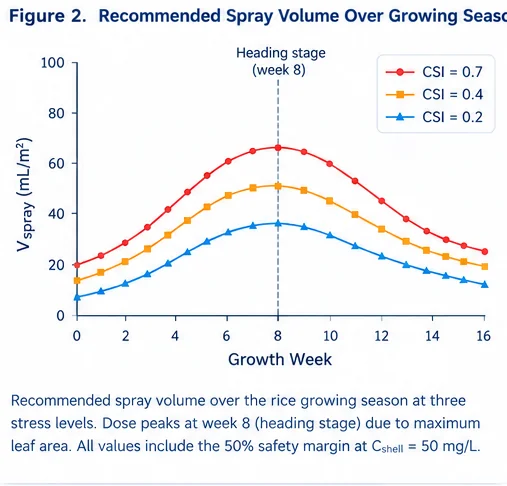
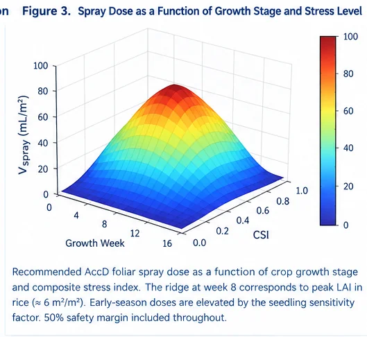
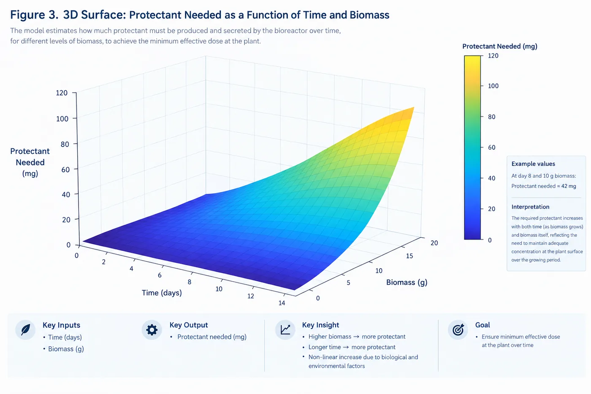
How to read the demand surface
The peak marks the most expensive week, not the most dangerous one. Dose is per square metre of ground, but coverage is per square metre of leaf, and equation (17) forces Vspray to track LAI. Leaf area peaks at heading, when the plant stops adding leaves and switches to grain. Risk peaks earlier, since S(t) falls from 1.8 at transplanting to 0.3 by grain fill, so the plant is most vulnerable in week 0 while dose peaks near week 7. The time profile runs 1.29 / 5.11 / 0.36 at weeks 0, 8, 16; the stress scale 0.26 / 1.35 / 6.72 at CSI 0.2, 0.4, 0.7. Each curve is the same profile times a different number.
How the two surfaces connect
Surface (a) gives a volume per unit ground area. Multiplying by field area gives the batch volume, and multiplying by Cshell converts that to a mass of protectant in milligrams, which is the axis of surface (b). For a 200 m² field at Cshell = 50 mg/L:
| Condition (week 8) | Vspray | Batch volume | Protectant required | Reactor can supply? |
|---|---|---|---|---|
| CSI 0.2, mild | 0.72 mL/m² | 145 mL | 7 mg | Yes, within 3 days |
| CSI 0.4, moderate | 3.82 mL/m² | 763 mL | 38 mg | Yes, day 8 at 10 g |
| CSI 0.7, severe | 19.06 mL/m² | 3.8 L | 191 mg | No. Exceeds the 14-day maximum of about 120 mg |
This result only appears when the two surfaces are read together. One reactor covers mild and moderate stress on a 200 m² field. It cannot cover a severe event at heading, the case the system exists for. Demand rises about 5 times per step in CSI, following the twenty-fold amplification of ACC production under peak stress [7], while reactor yield rises far more slowly with time and biomass, so the gap opens exactly where it matters. Closing it needs a larger reactor, a higher Cshell, parallel units, or protectant banked ahead of the forecast. The D+3 trigger in section 2 makes the last option available, and the table above sets how early production has to start.
Below CSI ≈ 0.1 the model recommends no application at any growth stage.
The bottle, not the measurement
The system computes Vbatch for that field and produces exactly that volume into the bottle. The instruction is to apply the whole bottle, so dosing accuracy stays in the reactor rather than with the person holding the sprayer. Crop type selects the LAI curve, field area scales the dose to a total volume, and location pulls today's CSI from the stress map. The output is one prepared bottle, not a measurement the farmer makes.
The 1.5 times margin is already inside the bottle. Because m sits inside Vspray, every volume produced is 50% above nominal: 509 mL nominal becomes 763 mL for a 200 m² field at week 8 and CSI 0.4. The margin covers bottle-storage degradation, UV inactivation on the leaf, and timing error. Deposition loss is handled separately by fspray. If the D+3 forecast does not cross the activation threshold, no bottle is produced that cycle.
Method
The six equations behind the recommendation Leaf area, seedling sensitivity, spray volume, batch volume, delivered dose and the feasibility criterion, with the parameters each one carries.
Dose scales with LAI because more leaf area needs more total enzyme to hold the same surface concentration. LAI rises from transplanting, peaks at heading, and declines through ripening. We model it as a Gaussian in season week:
Young plants are disproportionately vulnerable to stress ethylene, and the first protective ethylene peak that AccD has to intercept occurs within hours of stress onset. A sensitivity factor raises the early-season recommendation:
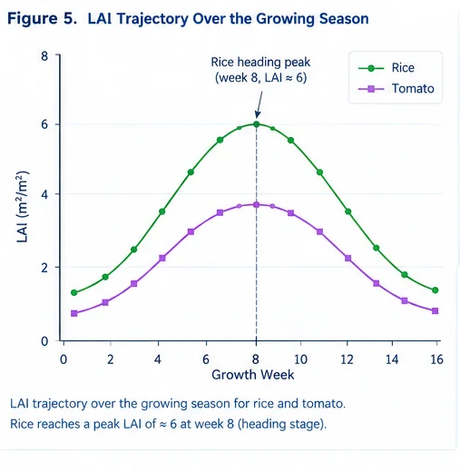
Data needed from the wet lab
| Gap | Experiment | Why it blocks the model |
|---|---|---|
| τdecay | AccD half-life on a leaf surface under Taiwan outdoor conditions | Without it the Damköhler criterion cannot be evaluated and feasibility is unproven |
| Dmin | Spray inoculation with ACC suppression readout | Without it the adequacy flag has no threshold |
| fspray | Tracer-dye deposition test on the target canopy | Largest single uncertainty in the delivered dose |
| S(t) coefficients | Stress-ethylene response at two or more growth stages | Currently phenomenological |
Scope
AccD is the only protectant this model covers. If LEA14 or BoPep4 are confirmed to act at the root zone rather than the leaf surface, their delivery reverts to soil transport and the 3D advection-dispersion finite volume model applies to those two instead. The foliar dose equation should not be applied to a protectant whose mechanism needs root-zone delivery. Each protectant's delivery route should be confirmed by the wet lab before the model is used for production planning.
Soil transport
Once the protectant leaves the nozzle and reaches the soil surface, the question becomes how far it travels and how fast. This sub-model models that journey: how the protectant moves downward through the soil column toward the root zone, carried by gravity-driven water flow, spread laterally by dispersion, and slowed by adsorption to soil particles.
We solve this using a three-dimensional advection-dispersion equation (ADE) on a finite-volume mesh built in FiPy, using a 10 × 10 × 10 cell grid with gravity-driven Darcy flow. The model captures the real physics of transport through porous media: the protectant doesn't simply fall straight down, it spreads, slows at particle surfaces, and takes hours to a day to reach root depth depending on soil type.
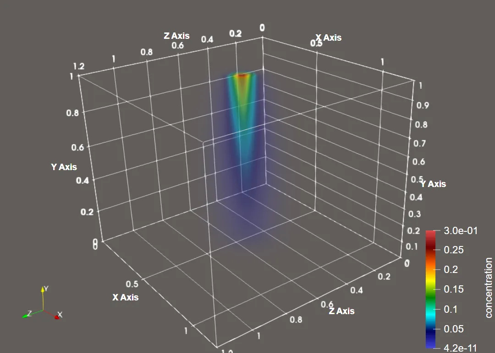
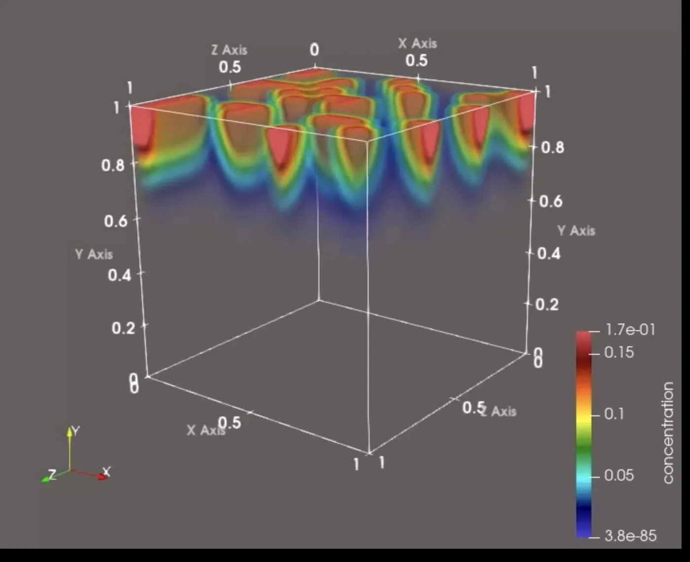
Periodic movement, what the diagram shows
The red arrows show the horizontal directions (x and z). In those directions, the model uses periodic boundary conditions: any protectant that reaches one side of the mesh re-enters from the opposite side. This isn't physically saying the field wraps around, it's a modeling choice that lets a small representative soil volume stand in for a much larger field, by assuming the lateral transport behavior repeats uniformly. The blue diagonal arrows indicate the three-dimensional space the model operates in. The vertical direction (y, downward into the soil) is not periodic, that's where gravity-driven Darcy flow carries the protectant toward the root zone.
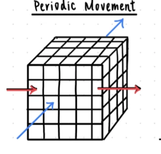
Inputs and outputs
Input: the effective protectant concentration at the soil surface Ceff (mg/L) from the delivery model, the pulse entering the soil after spray and adsorption losses; soil hydraulic conductivity κ (m/s), porosity φ, longitudinal dispersivity αL (m), transverse dispersivity αT (m), molecular diffusion De (m²/s); soil bulk density ρb and soil-water partition coefficient Kd (mL/g) for computing adsorption retardation; and the domain geometry and mesh resolution.
Output: the full spatiotemporal concentration field C(x, y, z, t) throughout the soil volume over the irrigation cycle, showing where the protectant is at every point in space and time, and the concentration at root-zone depth, which feeds directly into root uptake.
Assumption
The soil is treated as spatially homogeneous: uniform hydraulic conductivity, porosity, and dispersivity throughout the entire domain. Real Taiwanese agricultural soils have distinct horizons (topsoil, subsoil, parent material), macropore networks from earthworms and old root channels, and lateral heterogeneity from tillage and irrigation patterns. All of that produces concentration fingering and preferential flow paths that our smooth diffusion front cannot capture. We accept this limitation because characterising real soil heterogeneity at field scale would require data we don't have, but it means the model likely overestimates how evenly the protectant is distributed across the root zone.
Method
The five equations the solver actually integrates Governing transport, adsorption retardation, Darcy and seepage velocity, the two dispersion coefficients, and the root uptake sink as FiPy implements it.
Layered dispersion runs from 0.045 to 0.022 and 0.010 to 0.004 m²/day between topsoil and subsoil, and the time to root depth comes out between a few hours and about a day depending on soil type, as the pipeline figure records.
GIS economic impact
Deploying a bioreactor into a field starts with a single number: how many units does a given hectare actually need? Getting there requires six linked stages, each one converting a wet-lab or literature input into the next stage's assumption. This page shows the full derivation, assumptions, inputs, governing equations, and outputs, for each stage, from enzyme activity to units per hectare.
Stage 1, minimum enzyme activity
Assumption: the field-standard ACCD screening cutoff (20 nmol/mg/h, Penrose & Glick 2003) [8] is a strain-isolation quality-control threshold, not a dose-response-derived efficacy value. It tells you a strain has ACCD activity, not that the activity is sufficient for in-plant protection. Using it as the design target would understate what's actually needed.
Input: literature strain sources demonstrated to confer effective in-plant salinity protection, reporting a specific-activity range of 1,589 to 1,677 nmol/mg/h [9].
Derivation: target specific activity is set at the midpoint of the effective-protection range, expressed in working units, \( A_s = 1{,}600\ \mathrm{nmol\ mg^{-1}h^{-1}} = 1.6\ \mu\mathrm{mol\ mg^{-1}h^{-1}} \).
Output: \( A_s = 1.6\ \mu\mathrm{mol\ mg^{-1}h^{-1}} \), an 80 times higher bar than the field-standard screening cutoff, keeping "protein is enzymatically active" (quality) separate from "protein is present in sufficient quantity" (Stage 2).
Stage 2, bioreactor kinetics
Assumption: volumetric activity, the actual output of a liter of culture per hour, is the product of how active each enzyme molecule is (specific activity) and how many enzyme molecules are present (protein titer). This keeps enzyme quality and production quantity as independently tunable variables rather than one conflated number.
Input: As = 1.6 µmol/mg/h from Stage 1, and Tp = 5.4 mg/L, a conservative placeholder titer for heterologous secreted protein in B. subtilis (about 27 kDa), unoptimized, pending wet-lab titer data.
| Titer scenario | Tp (mg/L) | Av (µmol/L·h) |
|---|---|---|
| Conservative (used downstream) | 5.4 | ≈9 |
| Moderate | 50 | ≈80 |
| Optimized | 500 | ≈800 |
This sits well below B. subtilis's literature ceiling for optimized secretion (20 to 25 g/L), so all downstream figures (coverage radius, density, cost) should be read as an upper bound on density and a lower bound on coverage. Real production will very likely require fewer bioreactors per hectare than stated here, not more.
Stage 3, effectiveness threshold
Assumption: a protective effect requires bulk root-zone concentration to stay above a minimum threshold; below it, the protectant is present but not delivering measurable protection. This threshold, not zero concentration, is what defines the edge of a bioreactor's coverage.
Input and output: Cth = 0.1 mg/L ACCD protein (placeholder, pending in-house dose-response validation), used as the concentration floor and the stopping condition when solving Stage 4's transport equation for coverage radius.
Stage 4, soil-type-specific coverage
Assumption: protectant movement through soil is governed by three competing processes: advection (bulk flow carries it), dispersion and diffusion (uneven flow paths and molecular diffusion spread it), and loss (adsorption, degradation, plant uptake remove it). Which process dominates determines whether the resulting plume is narrow and deep or wide and shallow.
Input: soil physical parameters per type, plus the placeholder assumption that protectant concentration decays to 10% of peak concentration over a single 48 to 72 h irrigation cycle.
| Soil type | Porosity φ | Permeability κ (cm²) | Deff (cm²/s) | αL (cm) | PeL | Radius R (cm) | Area πR² (m²) |
|---|---|---|---|---|---|---|---|
| Sandy loam | 0.38 | 8.5 × 10−5 | 8.0 × 10−6 | 3.0 | ~8 | 8 | 0.20 |
| Loam | 0.42 | 5.0 × 10−5 | 5.0 × 10−6 | 4.5 | ~15 | 12 | 0.45 |
| Inceptisol | 0.45 | 4.0 × 10−5 | 4.0 × 10−6 | 4.0 | ~18 | 13 | 0.53 |
| Alfisol | 0.40 | 1.2 × 10−5 | 3.0 × 10−6 | 3.5 | ~25 | 14 | 0.62 |
| Clay | 0.48 | 2.0 × 10−6 | 1.0 × 10−6 | 2.0 | ~75 | 18 | 1.02 |
Soil parameters are literature-derived and pending in-house validation.
Péclet number expresses the ratio of advective to diffusive transport, \( Pe_L = v\,\alpha_L / D_{\text{eff}} \): low PeL (sandy loam, about 8) means diffusion competes meaningfully with flow; high PeL (clay, about 75) means advection would dominate diffusion if flow were fast, but clay's permeability is four orders of magnitude lower than sandy loam's, so its actual flow velocity is slow enough that diffusion still gets time to act laterally. This is the mechanism behind the counterintuitive result below.
Output, coverage radius per soil type, solved as the radial distance at which Cb falls to Cth under the 48 to 72 h decay assumption.
Counterintuitive result: high-permeability soils (sandy loam) produce the smallest coverage radius, not the largest. Rapid vertical, advection-dominated transport pulls protectant downward before it can spread laterally, producing a narrow, deep plume. Low-permeability clay does the opposite: slow flow gives diffusion time to work laterally, producing a wide, shallow plume that covers more ground per unit. This inverts the naive assumption that “better” soil drainage means fewer bioreactors needed, it's the reverse.
Stage 5, units per hectare
Assumption: each bioreactor's coverage area is treated as a non-overlapping unit of field area; a hectare is tiled by that unit to get a deployment density. This is a simplification: it does not yet account for packing geometry or overlap margins in an irrigation grid.
| Soil type | Coverage area (m²) | Bioreactors per hectare |
|---|---|---|
| Sandy loam | 0.20 | 50 |
| Loam | 0.45 | 22 |
| Inceptisol | 0.53 | 19 |
| Alfisol | 0.62 | 16 |
| Clay | 1.02 | 10 |
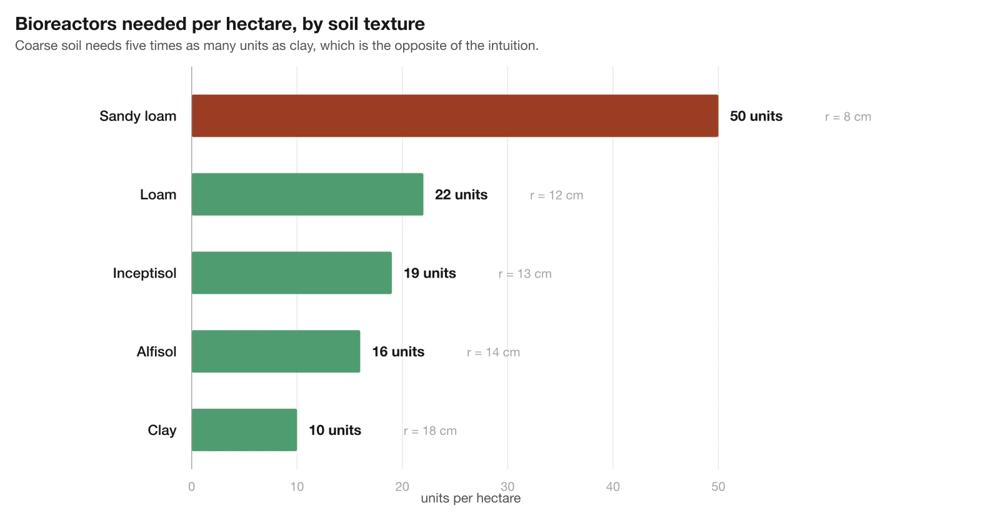
build/model_figures.py.This is the number GIS joins against Taiwan's soil-texture-by-county and township table to produce a per-location deployment count, which, multiplied by unit cost and cross-referenced against MOA guaranteed paddy prices, becomes the basis for the Impact section's cost-per-county figures.
This page stops short of that last step because the unit cost is not settled. The draft costs a unit at NT$30,000; the business plan on Entrepreneurship gives NT$60,000, and neither traces to a bill of materials. Publishing a cost per county here would put a third number into a disagreement that already has two. Once one parts list exists, the arithmetic is ready: units per hectare from equation (26), and hectares and soil texture per township from Geospatial Analysis.
Model assumptions
Our model runs one chain: an environmental signal becomes a light dose, the light dose becomes active enzyme, and the enzyme reaches the plant surface. Every step crosses a discipline boundary where a full mechanistic description would need parameters that do not yet exist for our system. We list the approximations we made instead, before any equations, so that any result can be traced back to the assumption responsible for it.
Confidence is High for our own measurements, Medium for published values from a comparable system, and Low for working approximations still to be tested. ★ marks the four that carry most of the remaining uncertainty, all of which sit in production and delivery rather than in transport physics.
| # | Stage | Assumption | Confidence |
|---|---|---|---|
| 1 | Spraying | 1.5 is a sufficient margin factor | |
| 2 | Spraying | Assume ACCD won't degrade based on literature that shows uptake is significantly shorter than general enzyme degradation time |
The draft's table has fifteen further rows, all of them empty, and no confidence rating or star has been entered against the two above. Until the team fills them in, the assumptions that are written down live in the sections they belong to: the crop thresholds and chosen weights in section 2, the borrowed Hill constants in section 3, the fixed spray efficiency in section 6, soil homogeneity in section 7, and the placeholder titre, threshold and tiling rule in section 8.
Symbols and parameters
The first table below is the notation as the drafts define it. The second lists every number the page uses and where it came from: Ours means we measured it, Literature means a named paper or public dataset, Assumed means somebody chose it. The provenance column is the wiki team's reading of the drafts, not a student annotation.
Symbol table The notation used from the delivery model through the GIS stages, with units.
| Symbol | Meaning | Unit |
|---|---|---|
| As | Specific activity of ACC deaminase | µmol · mg−1 · h−1 |
| Tp | Protein titer (secreted protein concentration) | mg · L−1 |
| Av | Volumetric activity | µmol · L−1 · h−1 |
| Cth | Minimum effective root-zone concentration (threshold) | mg · L−1 |
| Cb | Bulk protectant concentration in soil | mg · L−1 |
| Γ | Hydrodynamic dispersion tensor | cm² · s−1 |
| v | Seepage (pore-water) velocity | cm · s−1 |
| S | Source or sink term (adsorption, degradation, uptake) | mg · L−1 · s−1 |
| φ | Soil porosity | dimensionless |
| κ | Soil permeability | cm² |
| Deff | Effective diffusivity | cm² · s−1 |
| αL | Longitudinal dispersivity | cm |
| PeL | Péclet number (advection to diffusion ratio) | dimensionless |
| R | Coverage radius | cm |
| n | Bioreactor density | units · ha−1 |
| Vspray | Recommended spray volume per unit ground area | mL · m−2 |
| Vbatch | Batch volume produced for one field and cycle | L |
| Deff (delivery) | Effective dose reaching the canopy | mg · m−2 leaf |
| LAI(t) | Leaf area index at season week t | m² · m−2 |
| fspray | Spray coverage efficiency | dimensionless |
| Da | Damköhler number, uptake time over decay time | dimensionless |
Parameter table, with provenance Every value the equations above carry, what it is, and whether it was measured, cited or chosen.
| Symbol | Meaning | Value | Unit | Provenance |
|---|---|---|---|---|
| wT, wS | Weight on the heat and salt sub-scores | 0.35 | Assumed chosen, never fitted | |
| wH | Weight on the humidity sub-score | 0.15 | Assumed chosen, never fitted | |
| wTS | Weight on the heat and salt interaction | 0.15 | Assumed chosen, never fitted | |
| T0, EC0, VPD0 | Stress onset thresholds, per crop | not on record | °C, dS/m, kPa | Literature crop profiles, values not written down |
| KT, KS, KH | Half-effect points of the three sub-scores | not on record | °C, dS/m, kPa | Assumed |
| nT, nS, nH | Hill exponents of the three sub-scores | not on record | Assumed | |
| Γlapse | Elevation temperature correction | 6.5 | °C/km | Literature standard lapse rate |
| pIDW | Inverse-distance weighting power, 19 anchors | 4 | Assumed | |
| L0 | Control root length, day 6 | 74.95 ± 2.77 | mm | Ours 3 Aug 2026, n = 9 |
| KNaCl | Half-effect salt concentration, root elongation | 73.1 | mM | Ours fitted, equation (6) |
| nNaCl | Hill slope, root elongation against salt | 5.61 | Ours fitted, equation (6) | |
| K | CcaSR half-activation photon flux | 4.66 | µmol m−2 s−1 | Literature [3], attribution unsettled |
| n | CcaSR Hill exponent | 1.88 | Literature [3] | |
| PPFDmin, PPFDmax | LED panel range | 0.5, 20 | µmol m−2 s−1 | Assumed panel designed, not built |
| klux | Photon flux to illuminance, 526 nm | 124 | lux per µmol m−2 s−1 | Literature photometric constants |
| Foff | PcpcG2 output in the dark | 1,500 | MEFL | Ours claimed as a wet-lab endpoint |
| Fon | PcpcG2 saturated output | 30,000 | MEFL | Ours claimed as a wet-lab endpoint |
| μ1, μ2 | The two exponential growth rates, 22 °C long run | 0.0318, 0.0164 | h−1 | Ours 434 h run |
| μmax | Maximum specific growth rate, 37 °C | 0.48 | h−1 | Ours |
| KX | Carrying capacity, 22 °C long run | 1.456 | OD600 | Ours read at about 250 h |
| k | Spray calibration constant | 18.5 | Literature [5] | |
| m | Safety margin on every bottle | 1.5 | Assumed engineering choice | |
| fspray | Spray coverage efficiency | 0.55 to 0.70 | Literature [6], fixed here | |
| Dmin, τdecay | Minimum effective dose, leaf-surface half-life | open | mg m−2, h | Assumed wet lab pending |
| As | Target ACC deaminase specific activity | 1.6 | µmol mg−1 h−1 | Literature midpoint of [9] |
| Tp | Secreted protein titre | 5.4 | mg/L | Assumed placeholder, no in-house titre |
| Av | Volumetric activity | 8.64 | µmol L−1 h−1 | Assumed computed from an assumed titre |
| Cth | Minimum effective root-zone concentration | 0.1 | mg/L | Assumed placeholder, no dose response |
| φ, κ, Deff, αL | Soil transport parameters, five textures | see stage 4 | various | Literature texture-class values, none measured here |
| fdecay | Concentration decay over one irrigation cycle | 0.1 in 48 to 72 | fraction, h | Assumed |
| R | Coverage radius, by texture | 8 to 18 | cm | Assumed solved from assumed inputs |
What the model changed
Four decisions came out of these models and went back into the build.
The first was the LED range. Inverting the transfer function before specifying hardware showed that Taiwan's whole realistic stress range asks for under 9 µmol m−2 s−1. The panel was specified to 20 instead of to a round hardware maximum, which left headroom without paying for brightness nobody would use. The floor at 0.5 was added once the model showed that a dose below the circuit's dark leak carries no information.
The second was to forecast instead of react. A cold reactor at 22 °C needs twenty to thirty-four hours before it produces anything, and the circuit's own activation half-time adds to that. A controller that waits for measured stress would deliver protectant after the event, so the stress map runs on a three-day forecast and the interface counts down to when the light should start.
Third, a bottle replaced irrigation. Here the delivery model changed the design instead of describing it. Spraying through the irrigation line puts enzyme on bare soil between rows; a bottle sized for one field and one week puts it on the canopy, and moves the dosing arithmetic off the farmer and into the reactor.
Fourth, soil texture entered the siting rule. Before the transport model, deployment density was one number. After it, it is five numbers spanning a factor of five, and they run against the intuition that free-draining soil is easier to treat. Any pilot now has to record its soil texture, or its result will not transfer to other sites.
One change landed in the wet lab. The salt ladder is steep enough that the working range for the plant screen is narrow: below 60 mM there is nothing to rescue because nothing is hurt, and at 150 mM there is nothing to rescue because nothing is left. That is the same conclusion the Plants page reaches from the plates, arrived at here from the curve.
Open questions
Six things on this page are not settled. They are collected in one place so the modelling team can work down one list.
- The yield fit has no results yet. Variable selection, the fitted model, the held-out validation season and the method write-up are headings in the draft with nothing under them. Until they are written, the index in production is still the weighted composite.
- Nine constants in equations (2) to (4) are not written down anywhere. Three thresholds and six Hill constants produced the 990-scenario sweep, the heat map and every stress score the interface has shown. They live in a script. They belong in the parameter table.
- Nothing converts the salt ladder to the index. The ladder is sodium chloride molarity in agar, the index takes conductivity in the field, and no conversion is recorded for our agar or our crop.
- The two MEFL endpoints need a date and a file. Equation (10) is built on an off state of 1,500 and an on state of 30,000 described as wet-lab endpoints. Name the experiment that produced them, or rewrite the equation with a symbolic floor and ceiling.
- K = 4.66 and n = 1.88 are attributed to two different papers. The draft credits Ohlendorf et al. 2019; the team's citation list carries Castillo-Hair et al. 2019 for B. subtilis CcaSR. One of the two is wrong, and both equations (7) and (10) rest on the pair.
- The growth plateau is read after the sensor alarm. K ≈ 1.456 OD600 is read at about 250 h; the Digital Twin page records the optical density as unusable from 243.0 h. Either read the plateau earlier or withdraw it.
Not modelled
Three pieces of the pipeline in Figure 2 have no section on this page. We left them out on purpose, and the table gives the reason for each.
| Not here | Why, and where it sits instead |
|---|---|
| Membrane transport | The Kedem-Katchalsky flux pair and the two-compartment transient are worked through against the locked hardware on the bioreactor teardown, which is where the module, the sieving coefficient and the critical flux are documented. |
| Irrigation-line delivery | The team's position is recorded in the draft: the irrigation route is not being used as the delivery mechanism. The foliar bottle in section 6 replaces it. |
| Root uptake and plant ethylene response | Michaelis-Menten root-surface uptake and the two-peak ethylene model are drawn in the pipeline figure with literature sources, and neither is written as a model. AccD acts on the leaf surface, and the two protectants that might act at the root zone, LEA14 and BoPep4, have not touched a plant. The site of action has to come first. |
| Sensitivity analysis | Not run. With this many chosen parameters, and nine of them unrecorded, a sweep would mostly measure how much the answer depends on numbers nobody has written down. |
References
- Open-Meteo ECMWF forecast API, serving Central Weather Administration (中央氣象署) data for Taiwan. open-meteo.com. Daily maximum and minimum 2 m temperature, precipitation and reference evapotranspiration, D+1 to D+3, at 19 county anchors.
- Allen, R.G., Pereira, L.S., Raes, D., Smith, M. (1998) Crop evapotranspiration: guidelines for computing crop water requirements. FAO Irrigation and Drainage Paper 56. The reference evapotranspiration the vapour pressure deficit is derived from.
- Castillo-Hair, S.M., Baerman, E.A., Fujita, M., Igoshin, O.A., Tabor, J.J. (2019) Optogenetic control of Bacillus subtilis gene expression. Nature Communications 10:3099. doi:10.1038/s41467-019-10906-6. The draft attributes K = 4.66 and n = 1.88 to Ohlendorf et al. 2019; the team's citation list carries this paper for the same system. attribution to settle
- Herpell et al. (2024) on an accdS-carrying phyllosphere symbiont colonising tomato leaves and promoting growth through ACC deaminase activity, as cited in the draft. full reference needed
- Baum et al. (2024) on free AccD applied as a foliar spray to corn, effective at 53 mU/mL per plant, and the source of the spray calibration constant k = 18.5, as cited in the draft. full reference needed
- Zhou et al. (2023) on foliar spray deposition in field crops depending on canopy height, thickness and porosity, as cited in the draft. full reference needed
- Singh et al. (2015) on the twenty-fold amplification of ACC production under peak stress, as cited in the draft. full reference needed
- Penrose, D.M., Glick, B.R. (2003) Methods for isolating and characterizing ACC deaminase-containing plant growth-promoting rhizobacteria. Physiologia Plantarum 118(1):10 to 15. doi:10.1034/j.1399-3054.2003.00086.x. Source of the 20 nmol mg−1 h−1 screening cutoff.
- Strains reported to confer effective in-plant salinity protection at 1,589 to 1,677 nmol mg−1 h−1 specific activity. The draft gives the range without naming the strains or the papers. full reference needed
- Agriculture and Food Agency, Ministry of Agriculture (農粮署). County rice yield statistics, every season from 2001. The record the new stress index is fitted and tested against.